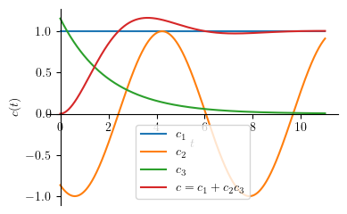
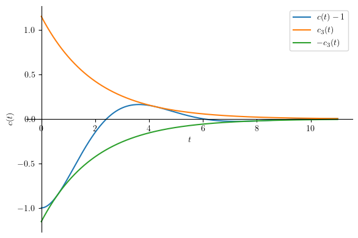
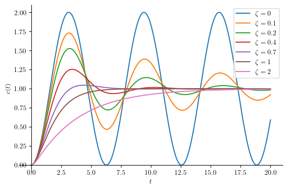

Second order system#
Required imports#
from IPython.core.display import HTML
import numpy as np
import matplotlib.pyplot as plt
plt.rcParams.update({
"text.usetex": True,
"font.family": "Helvetica",
"font.size": 10,
})
from sympy import *
from sympy.plotting import plot
from mathprint import *
Preparations#
Define variables that we are going to use repetitively: \(s, t, \tau\). We also need to define specific prpoperties of the variables.
t = symbols('t', real=True, positive=True)
s = symbols('s', complex=True)
tau = symbols('tau', real=True, positive=True)
omega_n = symbols('omega_n', real=True, positive=True)
zeta = symbols('zeta', real=True, positive=True)
The original laplace transformation functions are a little too long. We will simplify the laplace and the inverse laplace transformation functions, as follows.
laplace_transform(f, t, s, noconds=True)aslaplace(f)inverse_laplace_transform(F, s, t)asilapalce(F)
def laplace(f):
F = laplace_transform(f, t, s, noconds=True)
return F
def ilaplace(F):
f = inverse_laplace_transform(F, s, t)
return f
Second-Order System Equation#
A second-order system:
Here \(R(s)\) and \(C(s)\) are the input and output functions in \(s\)-domain, respectively. In time-domain, they become \(r(t)\) and \(c(t)\), respectively. We have two parameters:
natural frequency at which system: \(\omega_n\)
damping ratio is a system: \(\zeta\)
G = omega_n**2 / (s**2 + 2*zeta*omega_n*s + omega_n**2)
mprint("G=", latex(G))
Responses to a Unit-Step Input#
What we do here:
define a step function as the input function
r = Heaviside(t)
mprint('r(t)=', latex(r))
compute the Laplace formof the input function:
R = laplace(r)
mprint('R(s)=', latex(R))
apply the input to the system, obtain the output
C = G*R
mprint('C(s)=', latex(C))
compute the Laplace inverse of the output
c = ratsimp(ilaplace(C))
mprintb('c(t)=', latex(c))
As \( \zeta = 1 \), \( c(t) \) becomes undfined. Hence, we must use limit operation when \(\zeta = 1\).
cz1 = ratsimp(limit(c, zeta, 1))
mprintb('c_{\\zeta=1}(t)=', latex(cz1))
Let us rewrite the response equation, for \( \zeta \geq 0 \) :
System response is composed by 2 main components:
Forced response:
DC component: \(c_1(t) = 1\)
Natural response, which is made by a sinusiodal component divided by an exponential component:
Sinusoidal component: \(c_2(t) = - \zeta \sin{\left(\omega_{n} t \sqrt{1 - \zeta^{2}} \right)} \theta\left(t\right) - \sqrt{1 - \zeta^{2}} \cos{\left(\omega_{n} t \sqrt{1 - \zeta^{2}} \right)} \theta\left(t\right)\)
Exponential component: \(c_3(t) = e^{\omega_{n} t \zeta}\sqrt{1 - \zeta^{2}}\)
Thus: \(c(t) = c_1(t) + c_2(t)c_3(t)\)
zeta_ = 0.5 # set zeta > 0 and zeta != 1
omega_n_ = 1 # set omega_n > 0
c_lst = Add.make_args(c) # separate cn
c1 = c_lst[0]
c2 = numer(c_lst[1])
c3 = 1 / denom(c_lst[1])
p1 = plot(c1.subs(([omega_n, omega_n_],[zeta, zeta_])), (t, 0, 11), size=(4, 2.5), ylabel='$c(t)$', show=False, legend=True)
p2 = plot(c2.subs(([omega_n, omega_n_],[zeta, zeta_])), (t, 0, 11), show=False, legend=True)
p3 = plot(c3.subs(([omega_n, omega_n_],[zeta, zeta_])), (t, 0, 11), show=False, legend=True)
p4 = plot( c.subs(([omega_n, omega_n_],[zeta, zeta_])), (t, 0, 11), show=False, legend=True)
p1.append(p2[0])
p1.append(p3[0])
p1.append(p4[0])
p1[0].label = "$c_1$"
p2[0].label = "$c_2$"
p3[0].label = "$c_3$"
p4[0].label = "$c = c_1 + c_2 c_3$"
p1.show()

Peak time#
Peak time is achieved when \(\frac{\mathtt{d}c}{\mathtt{d}t}=0\)
cdot = Eq(simplify(diff(c,t)), 0)
mprint(latex(cdot))
tp = solve(cdot, t)
mprintb("t_p=", latex(tp))
For our example, let us apply the previous numerical values to \(\omega_n\) and \(\zeta\).
tp[0].subs(([omega_n, omega_n_],[zeta, zeta_])).evalf()
Maximum Overshoot#
Maximum overshot happens at \(c(t_p)\).
Mp = simplify(c.subs(t, tp[0])) - 1
mprintb("M_p=", latex(Mp))
For our example, let us apply the previous numerical values to \(\omega_n\) and \(\zeta\).
Mp.subs(([omega_n, omega_n_],[zeta, zeta_])).evalf()
Settling Time#
Settling time happens when the output reaches a certain accuracy limit from the steady state output.
Let us take a look only at \(c_2(t)\) and \(c_3(t)\)
mprint("c_2(t)=", latex(c2))
mprint("c_3(t)=", latex(c3))
tspan = (t, 0, 11)
p1 = plot((c-1).subs(([omega_n, omega_n_],[zeta, zeta_])), tspan, size=(6, 4), ylabel='$c(t)$', show=False, legend=True)
p2 = plot( c3.subs(([omega_n, omega_n_],[zeta, zeta_])), tspan, show=False, legend=True)
p3 = plot( -c3.subs(([omega_n, omega_n_],[zeta, zeta_])), tspan, show=False, legend=True)
p1.append(p2[0])
p1.append(p3[0])
p1[0].label = "$c(t)-1$"
p2[0].label = "$c_3(t)$"
p3[0].label = "$-c_3(t)$"
p1.show()

Notice that \(c_3(t)\) is the envelope of the \(c1(t)-1\).
2-percent settling time#
ts = solve(Eq(c3, 0.02) , t)
ts2 = ts[0]
mprintb('t_{s2} =', latex(ts))
For our example, let us apply the previous numerical values to \(\omega_n\) and \(\zeta\).
ts2_ = ts2.subs(([omega_n, omega_n_],[zeta, zeta_]))
ts2_
5-percent settling time#
ts = solve(Eq(c3, 0.05) , t)
ts5 = ts[0]
mprintb('t_{s5} =', latex(ts))
For our example, let us apply the previous numerical values to \(\omega_n\) and \(\zeta\).
ts5_ = ts2.subs(([omega_n, omega_n_],[zeta, zeta_]))
ts5_
Rise time#
Rise time happens when \(c(t_r) = 1\).
tr = solve(Eq(c-1, 0), t)
mprintb('t_r = ', latex(tr))
We take the first solution since \(t_r > 0\)
For our example, let us apply the previous numerical values to \(\omega_n\) and \(\zeta\).
tr[0].subs(([omega_n, omega_n_],[zeta, zeta_]))
The effect of damping ratio#
Cosidering the system’s natural response:
c2*c3
We can easily conclude that the damping ratio:
changes system’s natural frequency
changes system’s transient behaviour
The first point is quite straight forward. Thus, we will explore more on the second point.
tspan = (t, 0, 20)
zetas = [0, 0.1, 0.2, 0.4, 0.7, 1, 2]
p1 = plot(c.subs(([omega_n, omega_n_],[zeta, zetas[0]])), tspan, size=(6, 4), ylabel='$c(t)$', show=False, legend=True)
p1[0].label = "$\\zeta = " + str(zetas[0]) + "$"
for k in range(1, len(zetas)):
if zetas[k] != 1:
p2 = plot(c.subs(([omega_n, omega_n_],[zeta, zetas[k]])), tspan, show=False, legend=True)
else:
p2 = plot(cz1.subs(omega_n, omega_n_), tspan, show=False, legend=True)
p1.append(p2[0])
p2[0].label = "$\\zeta = " + str(zetas[k]) + "$"
p1.show()

Summary#
from pandas import DataFrame
from IPython.display import Markdown
def makelatex(args):
return ["${}$".format(latex(a)) for a in args]
descs = ["Rise time",
"Peak time",
"Maximum overshoot",
"2-percent settling time",
"5-percent settling time"]
vals = [tr[0], tp, Mp, ts2, ts5]
dic = {'Parameters': descs,
'Formulas': makelatex(vals)}
df = DataFrame(dic)
Markdown(df.to_markdown(index=False))
Parameters |
Formulas |
|---|---|
Rise time |
\(\frac{2 \operatorname{atan}{\left(\frac{\sqrt{\zeta + 1}}{\sqrt{1 - \zeta}} \right)}}{\omega_{n} \sqrt{1 - \zeta^{2}}}\) |
Peak time |
\(\left[ \frac{\pi}{\omega_{n} \sqrt{1 - \zeta^{2}}}\right]\) |
Maximum overshoot |
\(e^{- \frac{\pi \zeta}{\sqrt{1 - \zeta^{2}}}}\) |
2-percent settling time |
\(\frac{3.91202300542815 - 0.5 \log{\left(1.0 - \zeta^{2} \right)}}{\omega_{n} \zeta}\) |
5-percent settling time |
\(\frac{2.99573227355399 - 0.5 \log{\left(1.0 - \zeta^{2} \right)}}{\omega_{n} \zeta}\) |